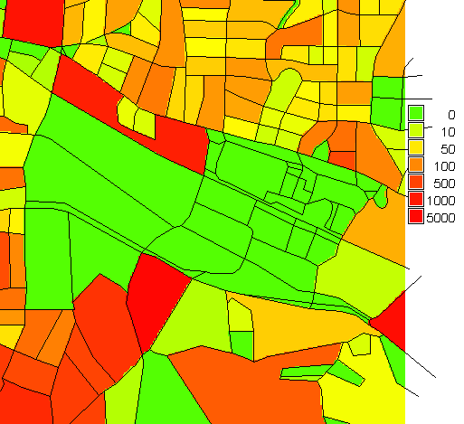
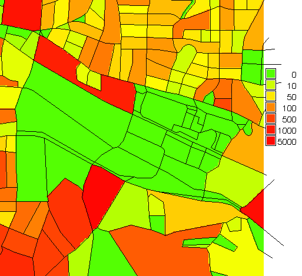
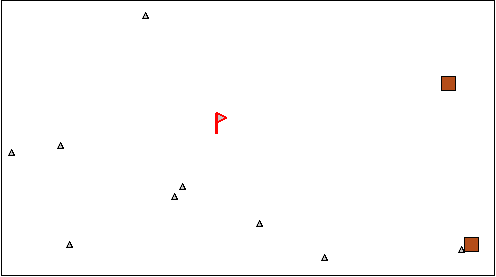

Geospatial data models
Helena Mitasova
Learning objectives
- Define raster and vector data models
- Understand and use data models transformations
- Recognize geospatial data formats
- Identify and use on-line geospatial data repositories and services
- Explain principles of open science:
open data, open source software, open access
Geospatial data models
Mapped data, modeling or analysis results are represented in GIS using
- raster (regular grid) data model
- vector (feature) data model
- specialized representations: meshes

Geospatial phenomena
- Continuous fields
- elevation surfaces
- temperature, precipitation
- concentration of chemicals in soil or water bodies
- Discrete features: lines, points or areas with attributes
- roads, buildings, cell towers
- land use types, administrative units
- Some phenomena can be treated as both types
- agricultural fields, soil properties
- population densities
Continuous fields
- each point in space is assigned a distinct value,
change in values between neighboring points is small
- mathematical representation: bi-variate or multi-variate
continuous functions w=f(x,y), w=f(x,y,z), w=f(x,y,z,t)
- often represented by raster data model,
- vector model is also used: isolines, meshes, or points.


Discrete objects / features
- lines, points, or areas with attributes
- represented by vector data model as geometry(shape) with attribute table;
- raster representation is also used
 


Raster data model: 2D
- header: spatial extent and resolution, followed by matrix of values (INT, FP, DP),
- continuous field : value assigned to a grid point
- discrete object : category value assigned to pixel (area)
Raster data model: continuous fields
Elevation, 10m resolution (combined with shaded relief)

Precipitation, 500m resolution (color map draped over elevation)
Raster data model: discrete features
Land use classes,
Speed limits for roads and walking speed for off-road areas, 30m resolution

Raster data model: 3D
- set of 2D raster layers can be used to represent soil horizons or geological layers
- combined representation:
- continuous (horizontally)
- discrete (vertically)
Cross-sections through 3D model of soil horizons
Raster data model: 3D
- header + 3D matrix of values, voxel model
- spatial extent N,S,E,W,Top, Bottom
- vertical resolution is usually much finer than horizontal
- mostly used for 3D continuous representation w=f(x,y,z)


Soil properties: Percent organic carbon, soil pH reaction
Vector data model
Abstract representation of complex features
school – point, road – centerline, park - polygon
- Geometry:
- Points [x,y,(z)] represent point, line, or polygon(area) features
- Set of points create elements of feature geometry: line: nodes, vertices; polygon: centroid, boundary
- Topology defines how the elements of
feature geometry are interrelated and organized (don't confuse with topography!)
- Topology ensures integrity of features and efficiency by defining shared coincident geometry (shared
boundaries, nodes).
- Attributes are stored in data management systems
Vector data model geometry
Elements: vertices(red), nodes(blue)
Point data: no topology; Line data: vertices, nodes

Vector data model geometry
Elements: vertices(red), nodes(blue), centroids(green)
Polygons: vertices+nodes=boundaries, centroids


Data model modifications
- Changing raster resolution
- Changing vector geometry type
Raster data - changing resolution
Resolution: size of the grid cell (pixel) in map units (m)
- continuous fields: re-interpolation
- the higher res. raster values are interpolated using the values of the neighboring lower res. cells
- methods: bi-linear, bi-cubic, spline
- discrete raster data: nearest neighbor resampling
- assigns the higher res. cell the same value as the nearest lower res. cell
- resulting raster has only the values present in the input raster
See Wikipedia for more detailed explanation and equations
Increasing resolution: continuous
Elevation at 30m resolution resampled to 10m resolution

Raster values are observed elevations
Increasing resolution: discrete
Geology at 30m resolution resampled to 10m resolution

Raster values are classes of observed geology
Increasing resolution: compare
Effect of resampling / reinterpolation on the results

Increasing resolution: compare
From 30m resolution to 20m resolution
- grid cells do not align,
- elevation: no "flats"
- geology: area for each class may change
Decreasing resolution
- continuous: re-interpolation, average, min, max, nearest neighbor

Decreasing resolution
- discrete: nearest neighbor resampling, mode (most common class)
Changing vector geometry
- lines or areas to points
- points to lines
- generalization
Image composite: slide 35
Conversion between data models
- vector to raster
- continuous: spatial interpolation
- discrete: nearest neighbor
- raster to vector
- continuous: point sampling, isolines
- discrete: nearest neighbor, grid center or boundary
Image composite - professional mapping
Conversion between data models
Examples see slide 48,50
- vector to raster
- continuous: spatial interpolation
- discrete: nearest neighbor
- raster to vector
Image composite - professional mapping
Common geospatial data formats
specific implementation of data model,
open standard or proprietary
Raster
- GIS (ascii and binary): ArcGRID, GRASS, SURFER
- Imagery: MrSID, GeoTIFF, BIN, JPEG2000
- Graphics: GIF, JPG, PNG, Bitmap
- HDF, NetCDF
Vector
- KML, Shape, ArcSDE, GML, MapInfo, TIGER
- PostGIS, OracleSpatial
data repositories
Data repositories, WMS, WPS, WebGIS
open science:
open data, open source software, open access
OSGeo, geo4all
Open source geospatial resources
OSGeo: Web GIS(many), QGIS, GRASS GIS, libraries
R, pySAL
Summary
- raster and vector data models
- geospatial data formats
- data repositories, wms services, metadata
- open science: open data, open source software, open access